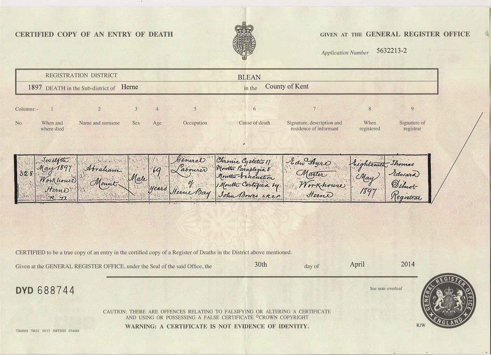
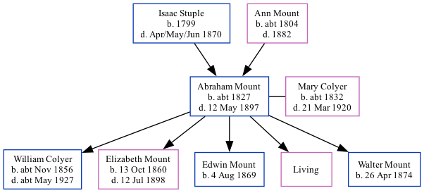

Abraham Mount c1827 - 1897
[ Home ] | [ Calendar ] | [ Surnames Index ] | [ Family History ]A mariner and the child of Isaac Stuple and Ann Mount, Abraham Mount, the great-great-grandfather of <a href="I1.html">Nigel Horne</a>, was born in Herne, Kent, England <i>c.</i> 1827<span class="citation">1,2,3,4</span>, was baptized there on Aug 26, 1827 and married Mary Colyer (a charwoman with whom he had 5 children: <a href="I2057.html">William</a>, <a href="I42.html">Elizabeth Ann</a>, <a href="I154.html">Edwin Henry</a>, <a href="I150.html">Mary A</a> and <a href="I151.html">Walter Charles</a>, along with 1 surviving child) in Herne Bay, Kent, England on Oct 22, 1859<span class="citation">5</span> (Registry office).</p><p>Throughout his life, Abraham lived in several places: on Salts Lane in Herne Bay on Apr 2, 1871<span class="citation">6</span>; in Eddington, Kent on Apr 3, 1881<span class="citation">7</span>; and at 2 Salts Lane in Herne Bay on Apr 5, 1891<span class="citation">3</span>. <p>He died on May 12, 1897 Herne Workhouse in Herne<span class="citation">4</span> (chronic cystitis, mortis paraplegia, mortis exhaustion).
Parents
- Isaac was born in 1799
- Ann was born c. 1804
Children
- William was born c. Nov 1856
- Elizabeth Ann was born on Oct 13, 1860
- Edwin Henry was born on Aug 4, 1869
- Walter Charles was born on Apr 26, 1874
Citations
- 1871 England Census Online publication - Provo, UT, USA: The Generations Network, Inc., 2004.Original data - Census Returns of England and Wales, 1871. Kew, Surrey, England: The National Archives of the UK (TNA): Public Record Office (PRO), 1871. Data imaged from the National
- 1881 England Census Online publication - Provo, UT, USA: The Generations Network, Inc., 2004. 1881 British Isles Census Index provided by The Church of Jesus Christ of Latter-day Saints © Copyright 1999 Intellectual Reserve, Inc. All rights reserved. All use is subject to the
- 1891 England Census Online publication - Provo, UT, USA: The Generations Network, Inc., 2005.Original data - Census Returns of England and Wales, 1891. Kew, Surrey, England: The National Archives of the UK (TNA): Public Record Office (PRO), 1891. Data imaged from The National
- England & Wales, FreeBMD Death Index: 1837-1915 Online publication - Provo, UT, USA: The Generations Network, Inc., 2006.Original data - General Register Office. England and Wales Civil Registration Indexes. London, England: General Register Office. © Crown copyright. Published by permission of the Cont
- England & Wales, FreeBMD Marriage Index: 1837-1915 Online publication - Provo, UT, USA: The Generations Network, Inc., 2006.Original data - General Register Office. England and Wales Civil Registration Indexes. London, England: General Register Office. © Crown copyright. Published by permission of the Cont
- 1871 England, Wales & Scotland Census - Findmypast (was age 44 and the head of the household)
- 1881 England, Wales & Scotland Census - Findmypast (was age 52 and the head of the household)
Notes
Father's name is blank on marriage certificate.
Media
Abraham Mount - Mary Colyer - marriage certificate

Abraham Mount - death certificate

England & Wales deaths 1837-2007 - BMD/D/1897/2/AZ/000239/178
1871 England, Wales & Scotland Census - GBC/1871/0014201501
1881 England, Wales & Scotland Census - GBC/1881/0004744073
Family Tree
Generated by Ged2Site. Last updated on Jul 20, 2025